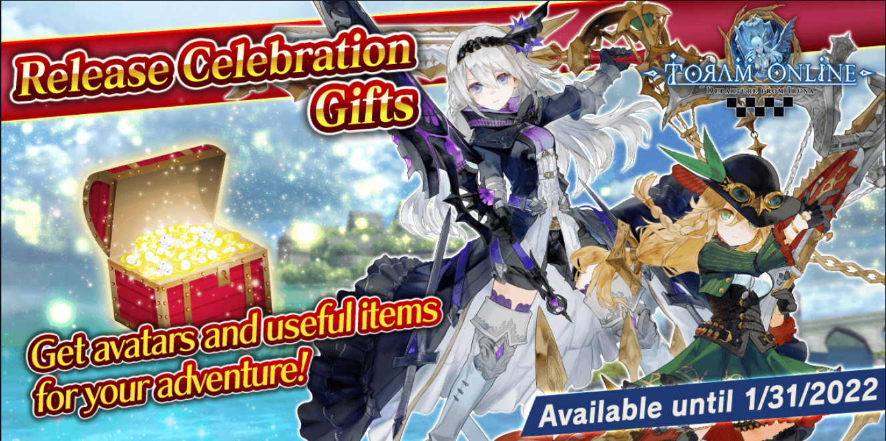

ASOBIMO INC.
Toram Online stands out for its deep character customization, non-linear class system, and a vast open world without typical job restrictions. Launched initially on mobile, it captured the hearts of thousands with its anime-style graphics, epic storylines, and action-packed combat system.
This release gave players the chance to experience Toram’s gorgeous world with enhanced visuals and smoother controls on their desktops and laptops, while still supporting cross-platform play with mobile users.
Asobimo, Inc. is a Tokyo-based game developer renowned for creating anime-style MMORPGs that capture the hearts of players worldwide. Founded in 2007, Asobimo's mission is to "Make everyone smile through ‘ASOBI’," focusing on immersive gameplay, character customization, and global multiplayer experiences for both mobile and PC players.
Some of their notable titles include:
Asobimo's commitment to quality and innovation has earned them a dedicated fan base and critical acclaim. Their games are designed to provide hours of entertainment, allowing players to craft their destinies in beautifully crafted fantasy realms.
For more information, you can visit their official website at Asobimo, Inc..